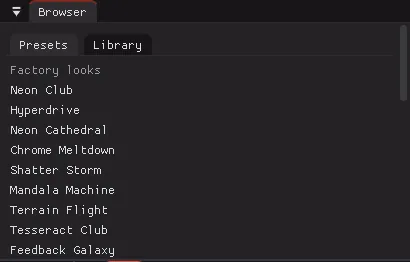

Contents
Getting started
- Welcome to NyrexVJ
- Installing and first start
- The window at a glance
- Your first show in five minutes
Playing visuals
- The clip grid
- Decks and transitions
- Layers and blending
- The Clip window
- Effects
- The Library
- Presets and sessions
- The Master window
Music and motion
Your own content
- Video and image clips
- Your own shaders
- 3D models
- The Clip Creator
- The node effect editor
- Live sources: Spout, NDI and cameras
Output and recording
Live control and shows
- Control: MIDI, OSC and the web page
- Show sync and timecode
- The show timeline
- Stage: DMX, VRSL and VRChat
- Plugins
Reference and help
Manual / Playing visuals
Presets and sessions
#Factory looks
The Presets tab starts with the factory looks. A click loads the look into the current deck, a right click lets you load it into another deck. There are 18: Neon Club, Milky Red, Crystal Cavern, Crystal Lines, Acid Rainbow, Deep Space, Synthwave Night, Laser Show, Minimal Mono, 3D Showcase, Warp Tunnel, Audio Reactor, Fractal Dream, Cyber Rain, Inferno, 3D Worlds, Crystal Cube and Pop Art.
The button Fill the decks with factory looks puts 16 looks into the 16 decks, a quick way to have something for every mood.


#Your own presets
Under Save current look, type a name and press Save. A saved preset contains all 16 decks, with their layers, clips, effects, colours, the master, macros and LFOs and the tempo settings. The list My presets shows what you saved. A click loads a preset, and a right click gives Overwrite with current and Delete.
File, Save as preset does the same from the menu. Presets are small files in the presets folder, so you can copy them to another computer.
#The session
Besides presets, NyrexVJ keeps a session: the state of the program as you left it. On the next start it opens exactly like that, unless you turn off Restore last session on start in Settings, General. The session is saved every 30 seconds when something changed, and a rotating set of the last ten autosaves is kept in the recovery folder.
#Undo and redo
Edit, Undo and Redo, or Ctrl+Z and Ctrl+Y (Ctrl+Shift+Z also redoes), step through your changes to sliders, clips, effects and decks. Playing a clip, triggering a column and moving the macro knobs are performance actions and are not part of undo. In the timeline and the node editor the same keys work on their own history while those windows have the focus.
Found a mistake or something missing? Tell us on GitHub. The same manual is built into the program, so you have it without internet. Open it with F1 or from the Help menu, then User manual.